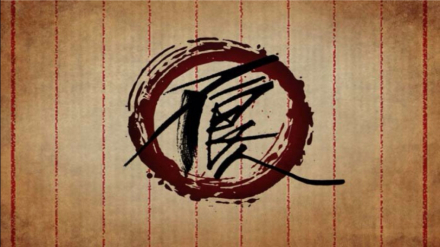
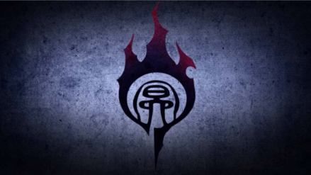
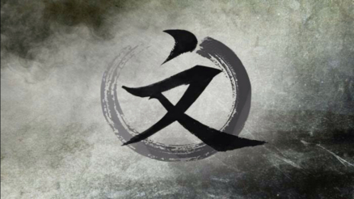

|
不良人 不良人是唐代官府中的一个秘密部门，类似于明代锦衣卫，只对皇帝负责，有天罡三十六校尉。 唐末黄巢作乱，官军无力平叛。于是在京城陷落前夕，不良人携皇室至宝龙泉剑销声匿迹，再没有人知道他们的下落。不良帅袁天罡暗中将手下不良人遣散到各个藩镇势力中潜伏下来，静待时机以图东山再起。现在驻地为藏兵谷。 所谓不良人，原本是官名，是中国唐代时官府掌管侦缉逮捕任务的官吏的职务称谓。在中国历史上，很多朝代都设有专门的负责侦缉逮捕、探查情报的衙门，汉朝有大谁何，隋朝有内外侯官，唐朝有丽竞门、不良人，五代有武德、侍卫司狱，宋朝有皇城司、走马承受，明朝的这种衙门因为各种影视剧的缘故，较为现代人所熟知，那就是锦衣卫。 |
 |
|
玄冥教 唐朝末年，梁王朱温杀死唐昭宗李晔，扶持傀儡皇帝李祚登基，三年后又逼其禅位，建立大梁朝，定都开封。朱温没有统一天下的实力，害怕别的割据势力夺走自己的基业，于是很早就命令长子朱友珪组织玄冥教，职能是刺探情报和诛杀异己。手下号称天下第一暗杀组织，行事诡秘，武功邪门，等级森严，好装神弄鬼。朱温长子朱友珪武功高强，改装易容，隐藏身份成为玄冥教首领冥帝。明里受命于朱温，为其羽翼，暗里扶植党羽，以夺帝位。但早已被不良人渗透进去。 |
 |
|
通文馆 晋王李克用手下有十三太保，除二太保嫡子李存勖，其余十二人皆为义子或义女。天佑四年，朱温簒唐，李克用拒不归顺，仍用唐朝年号，以复兴唐朝为名与朱温争霸。他以手下十三太保组织通文馆，以李嗣源为统领，暗中对抗朱温和李茂贞。李克用好武成痴，将通文馆全都交给李嗣源打理，自己则专心闭关修炼。 通文馆除了号称圣主的李嗣源和号称亚圣的李嗣昭，下设仁、义、礼、智、信、忠、孝、惠、勇、忍十字门，由十个太保担任门主。通文馆名为通文，门主却是十足小人伪君子，为争夺天下不惜手足相残。 |
 |
练气境界
习武筑基练气，气分二等六品。
一等天位：大天位——中天位——小天位
二等星位：大星位——中星位——小星位
焦兰殿
前唐朝皇宫，朱温篡位后仍以此为后梁皇宫。
渝州城
李星云在这里第一次遇到陆林轩和她的父亲陆佑劫。
剑庐
阳叔子隐居后的住所，李星云和陆林轩在这里长大。后被焚毁。